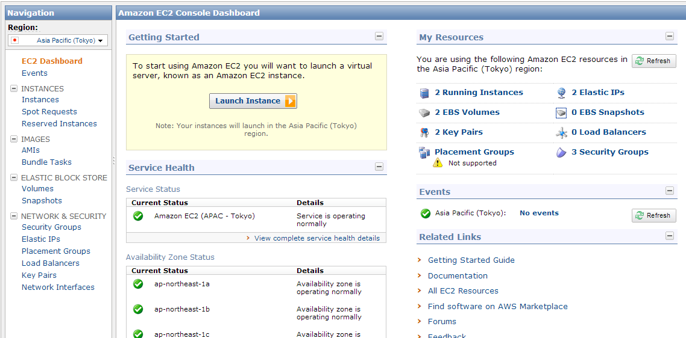

hun
blog: http://whitebluecloud.github.com
twitter: @
github:
Please! edit your profile
책 파는 걸로 유명한 amazon사에서 운영하는 클라우드서비스인데 상세한 내용은 검색을 하면 나보다 잘 아는 분들이 써놓은 글들이 많을테니 그 부분은 넘어가도록 하고 aws를 사용하게 된 이유는 물리적 or 금전적 or 귀찮음 or 능력 부족으로 서버를 보유하지 못한 사람들이 처음 1년 동안은 서버를 무료로 사용할 수 있게 해준다고 해서 사용하게 되었다.
가입절차는 로그를 남기려는 목적이 커서 가입절차에 따른 사진따위는 생략...
아마존웹서비스 홈페이지 [http://aws.amazon.com/ko/free/]
이제 가입을 했으니 instance를 생성해보자.
로그인을 하면
 이와 같은 화면이 나오게 된다.
왼쪽에 다양한 메뉴들이 있지만 일단 패스하고 가운데에 있는 Launch Instance를 클릭하면
아래의 뷰가 뜨게 된다.
위 classic wizard는 여러 서버목록이 다양하게 있으며 자신이 직접 서버환경설정을 해놓아 저장을 할 수도 있다. 입맞에 맞는 서버셋팅을 고를 수도 있으나, 난 입맛에 맞게 선택할 형편이 안되므로 quick Launch Wizard -> Amazon Linux AMI 2012.03을 선택(여러가지로 해본 결과 나에게는 이게 제일 나았음)
continue를 누르기 전에! 중요한 aws를 사용하는데 중요한 부분인 Choose a key pair라는 항목을 보면
기존에 처음 만든 사람들은 None으로 체크되어 있을 것이다.
Create New를 누르고 aws서버에 접근할 때 필요한 키를 생성한다.(중요)
적당한 이름으로 생성을 하고 download를 눌러 컴퓨터에 잘 저장해놓는다.(확장자 pem)
그리고 continue 를 누르면 생성이 된다.
이제 instance(서버)를 생성했다.
aws 메인에서 aws management console을 클릭하면 console화면이 나오게 된다.
계정 생성 후에는 이 페이지만 즐겨찾기 추가해놓고 사용하면 된다.
서버가 생성되면 initializing상태가 되는데 1~3분 정도 지나면 2/2 checks passed 라는 상태로 바뀌게 되고
서버가 정상적으로 작동하게 된다.
왼쪽에 탭중 주로 쓰게 되는 중요한 메뉴는 Instances, Security Groups, Elastic IPs, Key Pairs다.
생각해보니 instance 생성시에 quicklaunch로 생성하게 되면 quick-launch-0으로 셋팅될 것이다.
해당 그룹을 선택후 아래에 뜨는 inbound 탭을 클릭하면
서버에서 inbound로 들어오는 port를 열 수 있다. default로 22(ssh)가 열려 있을 텐데
80(http), 3306(MYSQL), 443(HTTPS)를 열어둔다.(port range, source는 일단 무시하고 add rule 후에
apply rule changes를 클릭한다.
이 부분은 생성한 서버에 public ip를 연결하는 부분이다.
Allocate New Address 클릭 후 EC2를 선택해 생성하면 위와 같은 ip가 생성되고 해당 ip를 클릭 후
오른쪽 버튼을 누르고 associate를 통해 좀 전에 생성한 서버와 연결을 할 수 있다.
여기까지하면 기본적으로 접속을 위한 서버세팅을 마쳤다.
instance에 접근하는 방법은 1. instances로 가서 해당 서버에 오른쪽 버튼 클릭 후 connect를 누르면 직접 접근 2. putty, xshell을 이용한 서버 접근 툴을 사용한다.
1의 경우는 해보면 아니 생략하고,
기존에 쓰고 있는 툴(putty의 경우)을 사용해 접근하는 방법에 대해 알아보면
(putty download) [http://www.chiark.greenend.org.uk/~sgtatham/putty/download.html]
위의 url을 클릭해 putty와 puttygen을 다운 받는다.
putty는 쉘 접속 프로그램이고, puttygen은 서버 접속시 ssh 암호키를 필요로 하는 경우에 사용할 암호키를 생성하는 툴이다.
먼저 puttygen 설치 후
하면 xxx.ppk라는 키가 생성된다.
여기까지 puttygen을 통해 암호키를 생성하는 부분이고,
이제 putty를 실행 host name에 전에 서버에 연결한 Elastic IP를 넣는다.
category 중 Connection -> SSH -> Auth 클릭 후 맨 아래에 있는 browse를 클릭 후 방금 생성한 xxx.ppk를 넣고
open을 누르면 쉘 접속이 된다. (그 전에 putty session을 생성해서 저장해놓으면 설정 입력없이 바로 서버에 접근 가능..이건 putty설정이니 패스)
quick launch instance를 통해 생성했다면
ec2-user라고 입력하면 자동으로 로그인 될 것이다.(ubuntu로 생성한 서버는 ubuntu 라고 치면 됨)
저번 글에는 Putty로 쉘 접근을 해보았다.
이번엔 이미지나 기타 다운로드한 파일들을 sftp로 올리는 방법에 대해 적어본다.
먼저 filezilla, 알ftp 같은 ftp 접속 툴을 다운 받는다.
Filezilla http://filezilla-project.org/
설치 후 편집 -> 설정 으로 들어가
연결 -> SFTP 를 누르면 위와 같은 화면을 볼 수 있다.
키 파일 추가 버튼을 클릭하여 putty를 접속할 때 생성한 xxx.key파일을 추가하면 된다.
확인 버튼을 누르고 나와
파일 -> 사이트 관리자를 클릭하면 아래와 같은 창이 뜬다. 새 사이트 생성버튼 클릭 후 적당한 이름을 적어주고 호스트에 서버 호스트(IP)를 적고
프로토콜은 SFTP, 사용자에 ec2-user(우분투의 경우 ubuntu)를 기입하고 연결하면
ftp로 업로드가 가능
아마존리눅스 AMI를 통해 설치하면 기본적인 apm관련 실행파일이 설치되어 있다.
빠진게 존재할 수도 있으므로 추가적으로 설치를 진행해보자.
putty로 접속하면 아래와 같은 화면을 볼 수 있다. 이제 apm설정을 위해 루트로 접속해야 한다.
sudo su(루트계정으로 접근)
모듈 설치를 위해 yum을 업데이트 (만약 yum이 없다면... 구글링을 통해 설치 ㅎㅎ)
yum update
yum으로 업데이트할 목록이 나오고 업데이트를 할거냐고 묻는다.
y를 눌러줍니다.
sudo yum install php-mysql php php-xml php-mcrypt php-mbstring php-cli mysql httpd (엔터) sudo yum install mysql-server
설치 후 sudo /etc/init.d/mysqld start 를 치고
mysql이 정상적으로 가동됐다는 메세지가 나오면 mysql이 정상적으로설치 된 것이다.
mysqladmin -u root password '사용할 루트계정의 비밀번호'
를 통해 비밀번호 디비접속 root계정의 비밀번호 설정을 할 수 있다.
아파치 설정을 위해
vi /etc/httpd/conf/httpd.conf 를 실행하면
아파치 웹서버 설정을 할 수 있는데 자세한 설정 방법은 검색을 통해 설정하시고 서버가 제대로 작동하는지에 대한
여부를 파악하기 위해 기본적인 설정만 해보도록 하겠다.
/var/www/html 를 쳐서
DocumentRoot "/var/www/html" 과
이 두 라인은 웹서버 접속시 루트폴더를 설정하는 부분인데 이것을 입맞에 맞게 설정한다.
저 같은 경우는 /www 로 수정했음.
DirectoryIndex index.html이란 부분을 찾아 index.php 를 추가해준다. 이제 저장하고 나와서 방금 설정한 웹서버 루트 경로로 들어가 테스트를 위해 index.php 파일을 생성해 웹브라우져로 접속해보면 정상적으로 화면에 php파일이 출력될 것이다.
아마존웹서비스를 통해 cloud 서버를 사용하여 apm 세팅을 마쳤다. apm셋팅이나 기타 세팅은 각자 자신만의 세팅을 하면 될 것 같다.
(중요사항) 아 서버 instance와 elastic ip는 하나씩만 생성하자!!!! ip를 생성해놓고 associate안하거나 2개 이상 생성하면 시간단위로 요금이 붙는다.......ㅠ